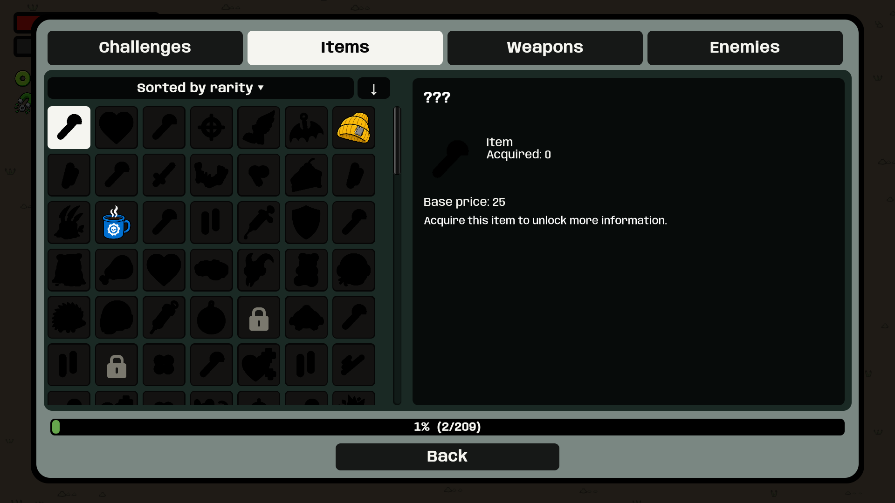
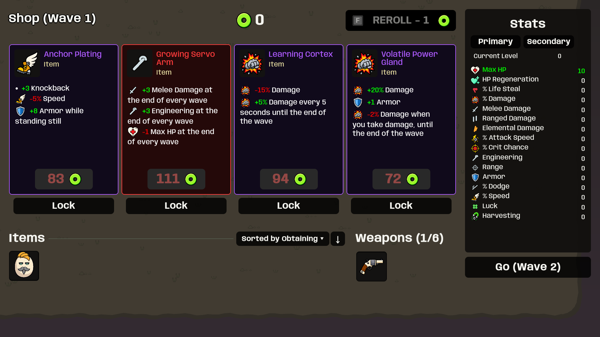

Unused serialized structure fields no longer overwrite item art with a turret. Pets and structures use their matching sprites; unrelated items retain their authored icons.


301 regression tests passed. These are staged built-player captures, not a manual input test.
Play updated build